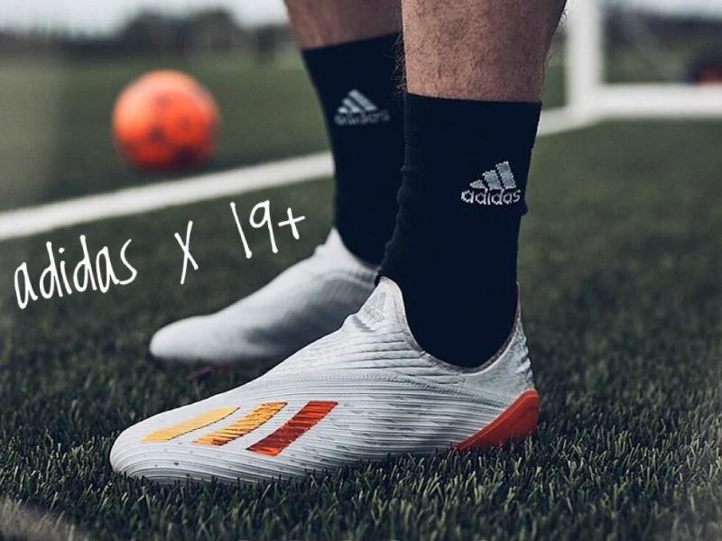
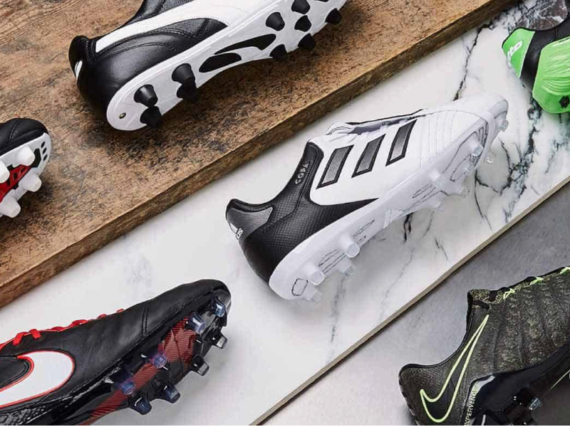
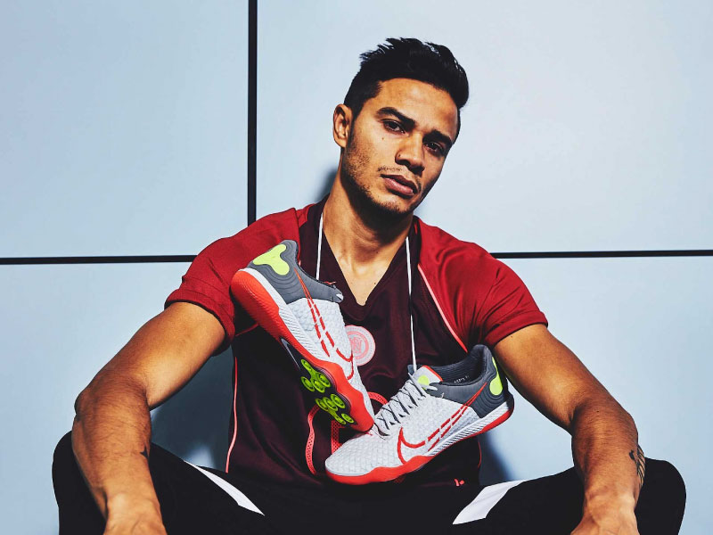
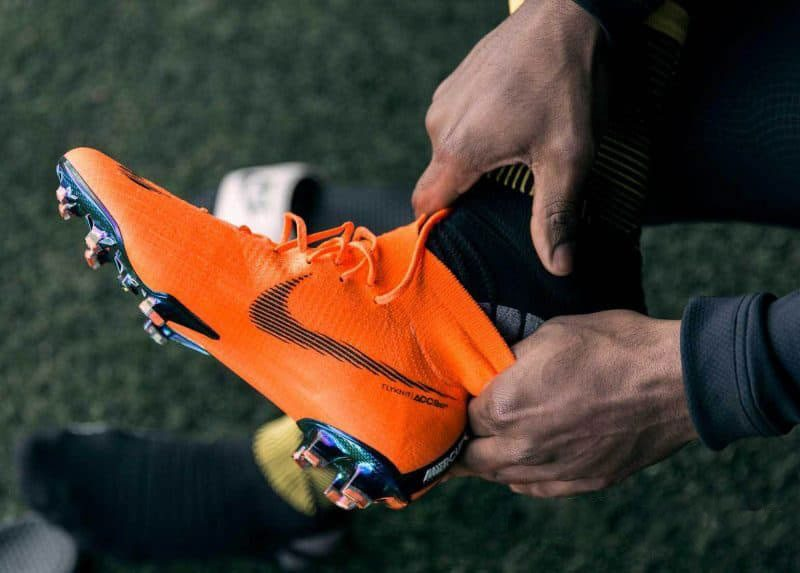

Bí kíp chọn giày đá bóng cho tiền đạo sân cỏ nhân tạo
Khác hoàn toàn với bóng đá nghiệp dư, bóng đá chuyên nghiệp sẽ có nhiều..

đá bóng bao nhiêu tiền? Hỏi đáp chi tiết
Bạn tò mò muốn biết giày đá bóng bao nhiêu tiền? Giày đá bóng của các cầu thủ chuyên nghiệp giá bao nhiêu? Loại giày đá bóng chính hãng, chất lượng, thiết kế đẹp mắt và hỗ trợ người chơi tốt nhất trên sân đáng giá bao nhiêu tiền?

#3 mẫu giày đá bóng mới nhất 2020!
2019 là năm vô cùng thành công của ngành sản xuất giày bóng đá. Tiếp bước cho những “bùng nổ” của năm cũ

Bật mí 5 cách làm giày đá bóng rộng ra!
Là một tay chơi bóng đá chuyên nghiệp, bạn sẽ hiểu một đôi giày đá bóng phù hợp cần phải hơi chật và ôm chân một tí. Một đôi giày vừa chân, chắc chắn giúp bảo vệ đôi chân người chơi và góp phần quan trọng vào thành tích thi đấu, tập luyện của cầu thủ.